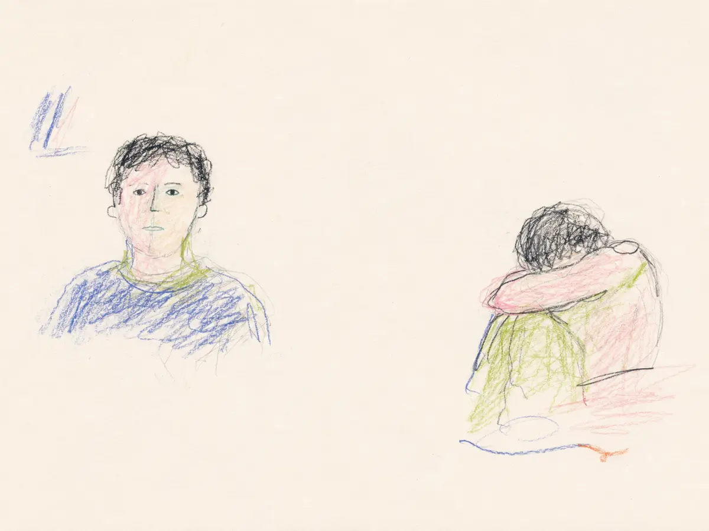
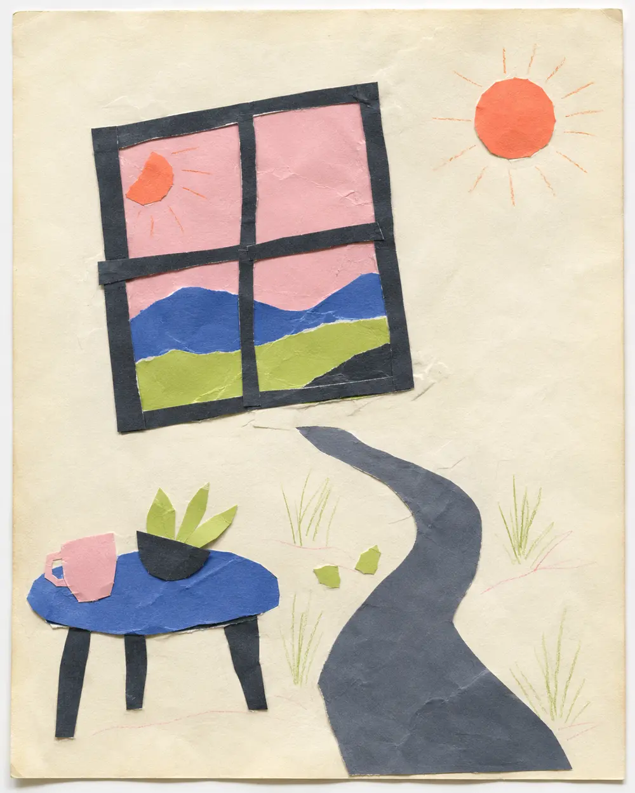
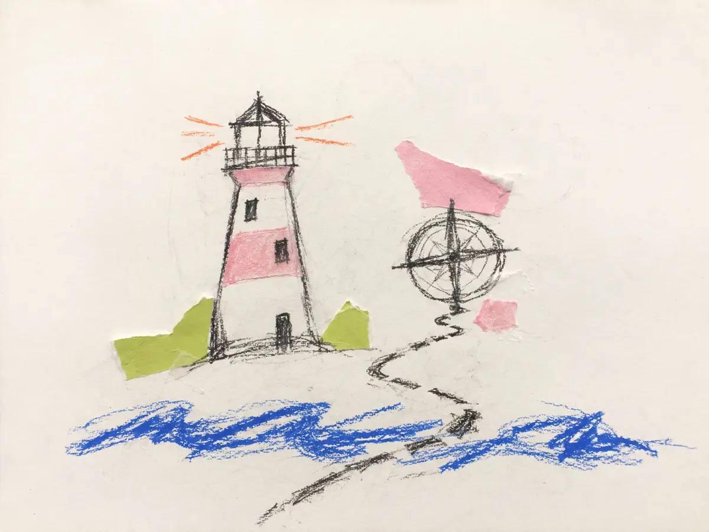

EXPRESS
먼저 그립니다
말을 정리하기 전에 색, 선, 거리와 빈 공간으로 지금의 장면을 표현합니다.
COLOR VOICE STORY
정해진 틀에 나를 맞추는 대신,
내 안의 여러 색과 이야기를 발견합니다.
그림으로 읽고 · 말로 연결하고 · 삶으로 옮기다
6주 동안 표현하고, 자신의 언어로 읽고, 다음 행동을 선택합니다.
WHY / LAYERED SELF
겉으로 드러나는 모습과 혼자 있을 때의 감정은 늘 같지 않습니다. 어느 하나를 정답으로 고르기보다, 서로 다른 모습을 한 사람의 이야기 안에서 바라봅니다.
사람들 앞에서
보이는 나
혼자 있을 때
느끼는 나
나는 하나의 색으로
설명되지 않습니다.
EXPRESS
말을 정리하기 전에 색, 선, 거리와 빈 공간으로 지금의 장면을 표현합니다.
VOICE
누군가가 의미를 확정하지 않습니다. 보이는 장면을 자신의 말로 천천히 읽습니다.
MOVE
발견한 감정과 욕구를 지금의 삶에서 시작할 수 있는 작은 행동으로 번역합니다.
ARTWORK / PROCESS TRACE
반듯한 결과보다 머뭇거린 선, 여러 번 덧칠한 색, 남겨둔 빈 공간을 함께 바라봅니다. 아래 이미지는 활동의 결을 보여주기 위해 재구성한 예시이며 실제 후기나 해석의 정답이 아닙니다.

보이는 나와 느끼는 나 사이에
생각보다 넓은 공간이 있었습니다.

원한 것은 더 빠른 성공보다
서두르지 않아도 되는 하루였습니다.

흔들리지 않는 사람이 아니라
다시 돌아올 방향을 가진 사람이 되고 싶었습니다.
VOICE NOTES
실제 효과를 단정하는 후기가 아니라, 과정에서 나올 수 있는 발화의 결을 재구성한 예시입니다.
왜 늘 같은 선택을 하는지 설명하려 했는데, 그림을 보고 나니 먼저 지키고 싶었던 것이 보였습니다.
빈 공간도 표현이라는 말을 듣고, 아무것도 채우지 않은 자리를 오래 바라봤습니다.
정답을 듣는 대신 제가 직접 작품의 제목을 바꿨습니다. 그 문장이 다음 행동을 정하는 기준이 됐습니다.
여러 모습 중 하나를 없애는 것이 아니라, 언제 어떤 색이 필요한지 알아가는 시간이었습니다.
FACILITATOR / PARK JIA · ART × COACHING
색과 선, 관계의 장면, 그리고 참여자의 말을 함께 봅니다. 예술적 표현을 심리 진단의 근거로 고정하지 않고 자기이해와 다음 선택을 여는 코칭 언어로 연결합니다.
담당 코치 · 박지아
연애·사랑·이별을 포함한 관계 심리와 1:1 맞춤 상담·코칭의 관점을 미술 표현 과정에 연결합니다. 작품을 대신 설명하기보다 참여자가 스스로 붙인 의미를 존중합니다.
“잘 그린 작품보다
솔직한 한 장면에서 시작합니다.”
PROFESSIONAL PROFILE
BEGIN WITH YOUR COLOR
내 안의 서로 다른 빛깔을 만나고,
그 색으로 다음 장면을 그려보세요.